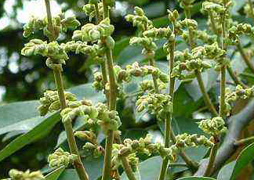

Specie: Sindora glabra
Taxonomy: Fabaceae; Detarioideae; Detarieae; Sindora
Abbr: Sgl
Level: Scaffold
chromosome number: 2n=2X=20

Introduction: Sindora glabra (Chinese: 油楠; pinyin: Yóunán) is a tree of the family Fabaceae (or Leguminosae) endemic to the People's Republic of China that grows in the provinces of Hainan, Fujian, Guangdong and Yunnan. The species is under second-class national protection in China. The species is found growing in mixed forests, on mountain slopes and along riverbanks between sea level and 800 m (2,600 ft). It grows to 8 to 20 metres (26 to 66 ft) tall and has a trunk diameter of 8 to 20 centimetres (3.1 to 7.9 in).
Distribution: China South-Central, China Southeast, Hainan
Article Title: The Diesel Tree Sindora glabra Genome Provides Insights Into the Evolution of Oleoresin Biosynthesis
Data source: The datasets presented in this study can be found in online repositories. The names of the repository/repositories and accession number(s) can be found below: https://www.ncbi.nlm.nih.gov/bioproject/PRJNA747876.